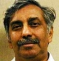

ನನ್ನೊಲವಿನ 'ಹರಿ'

ಜುಲೈ 22, 1969 ನನಗೆ ಈಗಲೂ ಚೆನ್ನಾಗಿ ನೆನಪಿದೆ. ಸಂಜೆ ಸುಮಾರು ನಾಲ್ಕು ನಾಲ್ಕೂವರೆ ಗಂಟೆ ಇರಬಹುದು. ಹರಿ ನನ್ನ ಹತ್ತಿರ ಮಾತನಾಡಬೇಕೆಂದು ಅವರು ತಿಳಿಸಿದ ಕಾರಣ, ನಾನು ಮತ್ತು ನನ್ನ ಅಕ್ಕ ಸರೋಜ ಇಬ್ಬರೂ ಅವರಿದ್ದ ಬೆಂಗಳೂರಿನ ಶ್ರೀರಾಮಪುರದ ಎಂ.36 ಮನೆಗೆ ಹೋಗಿದ್ದೆವು.
ನಮ್ಮಿಬ್ಬರ ಉಭಯಕುಶಲೋಪರಿ ಆದ ತಕ್ಷಣ ಅವರು ಕೇಳಿದ ಮೊದಲನೆ ಪ್ರಶ್ನೆ "ನನ್ನ ತಮ್ಮ ಸೀತಾರಾಮು ಹೇಳಿದ್ದ, ನಿಮಗೆ ಸಾಹಿತ್ಯದಲ್ಲಿ ಆಸಕ್ತಿ ಇದೆ ಅಂತ. ಇತ್ತೀಚೆಗೆ ನೀವು ಏನಾದರೂ ಹೊಸದಾಗಿ ಓದಿದ್ದೀರಾ? ಅಥವಾ ಯಾವುದಾದರೂ ಲೇಖನ, ಕತೆ, ಕವನಗಳನ್ನು ಬರೆದಿದ್ದೀರಾ?"- ಎಂದು. ನಾನು "ಇತ್ತೀಚೆಗೆ ಏನೂ ಬರೆದಿಲ್ಲ ಆದರೆ ಮೊನ್ನೆ ನಮ್ಮ ಕಾಲೇಜು ಪರವಾಗಿ ಡಿಬೇಟ್ ಕಾಂಪಿಟೆಷನ್ನಲ್ಲಿ ಭಾಗವಹಿಸಿದ್ದೆ, ಅದಕ್ಕಾಗಿ ಕೆಲವು ಪಾಯಿಂಟ್ಸ್ಗಳನ್ನು ಹಾಕಿಕೊಂಡಿದ್ದೆನೆ"- ಎಂದೆ. "ಹೌದಾ! ನೀವು ಡಿಬೆಟ್ನಲ್ಲೂ ಭಾಗವಹಿಸುತ್ತೀರಾ? ತುಂಬಾ ಸಂತೋಷ, ನೀವು ಭೈರಪ್ಪನವರ 'ದೂರ ಸರಿದರು' ಪುಸ್ತಕವನ್ನು ಓದಿದ್ದೀರಾ"- ಎಂದರು. "ಹೌದು! ಓದಿದ್ದೀನಿ"- ಎಂದೆ. "ಹಾಗಾದರೆ ಆ ಪುಸ್ತಕದ ಬಗ್ಗೆ ನಿಮ್ಮ ಅನಿಸಿಕೆ ಏನು?"- ಎಂದರು. ಹೀಗೆ ಶುರುವಾಯಿತು ನಮ್ಮಿಬ್ಬರ ಸಾಹಿತ್ಯ ಪ್ರಪಂಚದ ಆಗಮನ. ಇಬ್ಬರೂ ಭೈರಪ್ಪನವರ 'ವಂಶವೃಕ್ಷ' ಮೊದಲಾದ ಬೇರೆ ಪುಸ್ತಕಗಳು ಇವುಗಳ ಬಗ್ಗೆ ಹರಟುತ್ತಾ ಕಾಲಕಳೆದದ್ದೇ ಗೊತ್ತಾಗಲಿಲ್ಲ. ಇದೆಲ್ಲ ಅರ್ಥವಾಗದ ನಮ್ಮ ಅಕ್ಕ "ಹೊತ್ತಾಯಿತು ಮನೆಗೆ ಹೋಗೋಣವೇ"- ಅಂದಾಗ ಸಂಜೆ ಏಳು ಮೂವತ್ತು ಆಗಿತ್ತು. ಹೀಗೆ ಅಂದಿನಿಂದ ಪ್ರತಿನಿತ್ಯ ಸಾಯಂಕಾಲ ನಮ್ಮ ಅಮ್ಮನ ಮನೆಗೆ ಬರುವುದು, ಅವರ ಗೆಳೆಯರ ಪರಿಚಯ ಮಾಡಿಕೊಡುವುದು, ಪುಸ್ತಕಗಳ ಬಗ್ಗೆ ಮಾತನಾಡುವುದು ಶುರುವಾಯಿತು.
ನಮ್ಮ ಮದುವೆ ಆಗಸ್ಟ್ 29, 1969 ರಂದು ನಡೆಯಿತು. ಈ ಐದು ವಾರದ ಅವಧಿಯಲ್ಲಿ ಹರಿ ತಮ್ಮ ಕನ್ನಡದ ಪ್ರೇಮ, ತಾಯ್ನಾಡಿನ ಅಭಿಮಾನ, ಉಪಧ್ಯಾಯ ವೃತ್ತಿಯಲ್ಲಿ ಆಸಕ್ತಿ, ಓದು, ಬರೆಹ ಮುಂತಾದವುಗಳ ಬಗ್ಗೆ ಹೇಳಿಕೊಂಡಿದ್ದರು, ಅಲ್ಲದೆ ತನಗೆ ತಿಳಿದದ್ದನ್ನು ನಾಲ್ಕಾರು ಜನಗಳಿಗೆ ಉಣಬಡಿಸುವುದು, ಇರುವುದನ್ನು ಹಂಚಿ ತಿನ್ನುವುದು, ಸಾಲ ಮಾಡಿ ತುಪ್ಪ ತಿನ್ನದಿರು. ಇದು ಸೇರಲ್ಲ ಅದು ಸೇರಲ್ಲ ಎಂದು ಹೇಳದಿರು ಎಂದು ಹೇಳುತ್ತಿದ್ದರು. ಅಂದಿನಿಂದ ಇಂದಿನವರೆಗೂ ಹರಿ ನನ್ನ ಉತ್ತಮ ಗೆಳೆಯ, ಮಾರ್ಗದಶರ್ಿ, ತತ್ತ್ವಬೋಧಕ.
ನಮ್ಮ ಮದುವೆಯ ವಿಶೇಷ ಏನು ಅಂದರೆ; ನಮ್ಮ ಮದುವೆಯ ಮಾರನೆ ದಿನ ಬೀಗರ ಔತಣದ ದಿವಸ ಮದುವೆ ಮಂಟಪದಲ್ಲಿ ಸಾಹಿತಿಗಳ ಮಿಲನ, ಕವಿ ಸಮ್ಮೇಳನ ನಡೆದಿತ್ತು. ಈ ಸಮ್ಮೇಳನದಲ್ಲಿ ಪ್ರೊ| ಜಿ. ವೆಂಕಟಸುಬ್ಬಯ್ಯ, ಪ್ರೊ| ಲಕ್ಷ್ಮೀನಾರಾಯಣ ಭಟ್ಟರು, ಜಯರಾಂ, ಬಿ.ಎಸ್. ವೆಂಕಟರಾಮ್, ಮೂಲ್ಕಿ ರಾಘವೇಂದ್ರ ಇನ್ನೂ ಮುಂತಾದ ಸುಮಾರು ಇಪ್ಪತ್ತೈದರಿಂದ ರಿಂದ ಮೂವತ್ತೈದು ಜನ ಸಾಹಿತಿಗಳು ಹಾಜರಿದ್ದರು. ಅವರವರ ಕವನಗಳನ್ನು ಎಲ್ಲರೊಡನೆ ಹಂಚಿಕೊಂಡರು.
ನಮ್ಮ ಮನೆಯಲ್ಲಿ ತಿಂಗಳಿಗೊಮ್ಮೆಯಾದರೂ ಸಾಹಿತ್ಯಗೋಷ್ಠಿ, ವಿಚಾರಗೋಷ್ಠಿ ನಡೆಯುತ್ತಿತ್ತು. ಈಶ್ವರಚಂದ್ರ, ನಾ.ಕೃ. ಸತ್ಯನಾರಾಯಣ, ನೈವೇಲಿ ಬಂಧುಗಳಾಗಿದ್ದ ಕೃಷ್ಣಮೂತರ್ಿ, ಅಚ್ಚುತರಾವ್ ಮೊದಲಾದವರೆಲ್ಲ ಹಾಜರಿರುತ್ತಿದ್ದರು.
ನಾನು ಸಕರ್ಾರಿ ಬಾಲಕಿಯರ ಪ್ರೌಢಶಾಲೆಯಲ್ಲಿ ಅಧ್ಯಾಪಕಿಯಾಗಿದ್ದೆ. ನನ್ನ ವಿದ್ಯಾಥರ್ಿನಿಯೊಬ್ಬಳ ಮದುವೆಗೆ ನಾವಿಬ್ಬರೂ ಹೋಗಬೇಕಾಗಿತ್ತು. ನಾನು ಸರಳವಾದ ಉಡುಪಿನಲ್ಲಿದ್ದೆ. ನನ್ನನ್ನು ಕರೆದೊಯ್ಯಲು ಹರಿ ಬಂದಾಗ "ಹರಿ ಒಂದು ನಿಮಿಷ, ನಾನು ಅಮ್ಮನ ಮನೆಗೆ ಹೋಗಿ ರೇಶ್ಮೆ ಸೀರೆ ಉಟ್ಟುಕೊಂಡು, ಚಿನ್ನದ ಒಡವೆ ಹಾಕಿಕೊಂಡು ಬರುವುದಾಗಿ"- ಹೇಳಿದೆ. ಅದಕ್ಕೆ ಹರಿ "ನಿಮ್ಮ ಅಮ್ಮನ ಮನೆಗೆ ಹೋಗು, ಮುಖ ತೊಳೆದು ಫ್ರೆಶ್ ಆಗಿ ಬಾ; ಆದರೆ ರೇಶ್ಮೆ ಸೀರೆಯಾಗಲಿ, ಒಡವೆಯಾಗಲಿ ಇನ್ನೊಬ್ಬರಿಂದ ಸಾಲ ಪಡೆದು ಹಾಕಿಕೊಂಡು ಬರುವುದು ಬೇಡ. ನೀನು ಸರಳವಾಗಿದ್ದರೂ, ನಿರಾಭರಣ ಸುಂದರಿಯಾಗಿದ್ದೀಯಾ, ಬೇಕಾದರೆ ಒಂದು ಮೊಳ ಹೂವು ತಂದುಕೊಡುತ್ತೀನಿ ಮುಡಿದುಕೊಂಡು ಬಾ"- ಎಂದು ಹೇಳಿದರು. ಅಂದರೆ ಬೇರೆಯವರಿಂದ ಸಾಲ ಮಾಡಿ ಪ್ರದರ್ಶನ ತೋರಿಸುವುದು ಬೇಡ. ನಮ್ಮ ಬಳಿ ಏನು ಇದೆಯೋ ಅದನ್ನು ಬಳಸಿಕೊಂಡು ಸಂತೋಷಪಡೋಣ ಎಂದು ಹೇಳಿದರು.
ನಮ್ಮ ಭಾನುವಾರದ ಕಾರ್ಯಕ್ರಮ ಸಾಮಾನ್ಯವಾಗಿ ಬೆಳಿಗ್ಗೆ ಯಾವುದಾದರೂ ಹೊಟೆಲಿನಲ್ಲಿ ತಿಂಡಿತಿಂದು, ಮಧ್ಯಾಹ್ನ ಗೆಳೆಯರ ಅಥವಾ ಬಂಧುಗಳ ಮನೆಗೆ ಭೇಟಿಕೊಟ್ಟು, ಸಂಜೆ ರವೀಂದ್ರಕಲಾಕ್ಷೇತ್ರದಲ್ಲೋ, ಪುಟ್ಟಣ್ಣಚೆಟ್ಟಿ ಟೌನ್ಹಾಲ್ನಲ್ಲೋ ಅಥವಾ ಸಾಹಿತ್ಯ ಪರಿಷತ್ತಿನಲ್ಲೋ ನಾಟಕವನ್ನು ನೋಡಿ ಮನಗೆ ಬರುತ್ತಿದ್ದೆವು. ಜಿ. ನಾರಾಯಣ ಅವರ ಕಾಲದಲ್ಲಿ ಕನ್ನಡ ಸಾಹಿತ್ಯ ಪರಿಷತ್ತಿನ ಪರಿಚಾರಕರಾಗಿ ಕೆಲಸ ಮಾಡಿದೆವು. ಹರಿ ಚುನಾವಣೆಯಲ್ಲಿ ಗೆದ್ದು ಸಾಹಿತ್ಯ ಪರಿಷತ್ತಿನ ಚುನಾಯಿತ ಸದಸ್ಯರಾಗಿದ್ದರು. ಮಂಡ್ಯದಲ್ಲಿ ನಡೆದ ಅಖಿಲ ಭಾರತ ಕನ್ನಡ ಸಾಹಿತ್ಯ ಸಮ್ಮೇಳನದಲ್ಲಿ ಪುಸ್ತಕ ಪ್ರದರ್ಶನದ ನಿರ್ವಹಣೆಯನ್ನು ಹೊತ್ತಿದ್ದೆವು. ಹೀಗೆ ನಮ್ಮ ಸಾಹಿತ್ಯ ಪ್ರಯಾಣದ ಜೊತೆಜೊತೆಗೆ ಜೀವನ ಕಲಿಸಿದ ಪಾಠ ನಮ್ಮ ಉದ್ದಕ್ಕೂ ನಿಂತಿದೆ. ಶಾಮೂವಿನ ಹರಣ ಮತ್ತೊಂದು ಮಗುವಿನ ಮರಣ ಮತ್ತೆ ಮಕ್ಕಳು ಬೇಕೆಂಬ ಆಸೆ ನಮ್ಮನ್ನು ಹೊರದೇಶಕ್ಕೆ ನೂಕಿತು.
ಫೆಬ್ರವರಿ 18, 1975 ಶಿವರಾತ್ರಿಯಂದು ದೆಹಲಿಗೆ ಹೋಗಿ, ಅಲ್ಲಿಂದ ಇರಾನಿಗೆ ಪ್ರಯಾಣ ಮಾಡಿದರು. ಅಲ್ಲಿ ನಾವು ಅಪೇಕ್ಷಿಸಿದ ಮಕ್ಕಳ ಕನಸು, ನನಸಾಗದ ಕಾರಣ; ಮಕ್ಕಳು ಬೇಕೆಂಬ ಒಂದೇ ಗುರಿಯಿಂದ, ಔಷಧತಂತ್ರದ ಮೂಲಕ ಮಕ್ಕಳಾಗಬಹುದೆಂಬ ನಂಬಿಕೆಯಿಂದ ಅಮೆರಿಕಾಕ್ಕೆ ಹೋದೆವು. ಅಮೆರಿಕೆಯಲ್ಲಿಯೇ ನಮ್ಮ ಜೀವನದ ಶಕ್ತಿಭರಿತ ಕಾಲವನ್ನು ಕಳೆದೆವು.
ಹರಿ ಎಂಎಸ್ ಮಾಡಲು ಸ್ಟಿಲ್ವಾಟರ್ ಓಕ್ಲೋಹಾಮಕ್ಕೆ ಆಗಸ್ಟ್ 21, 1977 ರಂದು ಹೊರಟರು. ನಾನು ಒಂದು ತಿಂಗಳ ನಂತರ ಅವರನ್ನು ಹಿಂಬಾಲಿಸಿದೆ. ದೇವರ ದಯೆಯಿಂದ ಮೆಡಿಕಲ್ ಟ್ರೀಟ್ಮೆಂಟ್ ಇಲ್ಲದೆಯೇ ಸಹಜವಾಗಿಯೇ ಓಕ್ಲಾಹೋಮದಲ್ಲಿದ್ದಾಗ ನಂದಿನಿಯು, ಚೆರಿಹಿಲ್ ನ್ಯೂಜೆಸರ್ಿಯಲ್ಲಿದ್ದಾಗ ಸುಮನಾಳೂ ಹುಟ್ಟಿದರು. ಸ್ಟೌವ್(ಪಾಟ್ಸ್ಟೌನ್) ಪೆನ್ಸಿಲ್ವೇನಿಯಾದಲ್ಲಿ ಹರಿಯ ಕನಸಿನ ಕೂಸಾದ 'ಅಮೆರಿಕನ್ನಡ'ದ ಜನನವಾಯಿತು. ಕ್ಲೀವ್ಲ್ಯಾಂಡ್, ಓಹಾಯೋದಲ್ಲಿ ಸ್ವಲ್ಪದಿನ, ಸೆಂಟ್ಲೂಯಿಸ್, ಮಿಸ್ಸೋರಿಯಲ್ಲಿ ಎರಡು ವರ್ಷಗಳ ಕಾಲ, ನಂತರ ಪ್ಯಾಸಡೀನ, ಲಾಸ್ಏಂಜಲೀಸ್ನಲ್ಲಿ ಎರಡು ತಿಂಗಳ ಕಾಲ, ಕೊನೆಗೆ ಸ್ಟಾಕ್ಟನ್, ಕ್ಯಾಲಿಫೋನರ್ಿಯಾದಲ್ಲಿ ಹನ್ನೊಂದು ವರ್ಷಗಳ ಕಾಲ ಇದ್ದು, 2002 ರಲ್ಲಿ ಅಕ್ಟೋಬರ್ 29 ರಂದು ವಿಶ್ರಾಂತ ಜೀವನಕ್ಕಾಗಿ ಭಾರತಕ್ಕೆ ಪುನಃ ಮರಳಿದೆವು.
ಇದೆಲ್ಲ ಘಟನೆಗಳು, ವಿವರಗಳು. ಆದರೆ ಹರಿ ನನ್ನನ್ನು ಹೇಗೆ ಮಾರ್ಪಡಿಸಿದ್ದರು ಅಥವಾ ತಯಾರು ಮಾಡಿದ್ದರು ಎಂದರೆ ನಾವಿಬ್ಬರೂ ಒಂದೇ ರೀತಿಯಲ್ಲಿ ಆಲೋಚಿಸುವುದು, ಒಂದೇ ರೀತಿಯಲ್ಲಿ ನುಡಿಯುವುದು ಕೆಲವೊಮ್ಮೆ ಏಕೆ? ಹೆಚ್ಚು ಕಡಿಮೆ ನಮ್ಮ ಪದಗಳು ಒಂದೇ ಆಗಿರುತ್ತಿದ್ದವು. ಅದಕ್ಕೆ ನಮ್ಮನ್ನು ಹತ್ತಿರದಿಂದ ಬಲ್ಲವರು ಗಂಡುಭೇರುಂಡಕ್ಕೆ ಹೋಲಿಸುತ್ತಿದ್ದರು. ಕಾರಣ ನಮ್ಮಿಬ್ಬರ ಮುಖಗಳು ಬೇರೆ ಇದ್ದರೂ, ದೇಹ ಒಂದೇ ಆಗಿರುತ್ತಿತ್ತು. ಒಂದೇ ರೀತಿ ಆಲೋಚನೆಗಳು, ವಿಚಾರ ಲಹರಿಗಳು ಹರಿಯುತ್ತಿದ್ದವು.
ನಮ್ಮ ಮನೆಯಲ್ಲಿ ಊಟಕ್ಕಾಗಲಿ, ಹಣದ ವಿಚಾರಕ್ಕಾಗಲಿ, ಇನ್ನು ಮುಂತಾದ ಬೇರೆ ಯಾವುದೇ ವಿಷಯಕ್ಕೆ ಜಗಳ ಬರುತ್ತಿರಲಿಲ್ಲ. ನಾವಿಬ್ಬರು ಜಗಳವಾಡುತ್ತಿದ್ದುದು, ಒಂದು ಪದಕ್ಕೆ, ಒಂದು ವಾಕ್ಯಕ್ಕೆ ಒಂದು ವಿಷಯಕ್ಕೆ.
ಭಾರತಕ್ಕೆ ಮರಳಿ ಬರಲು ಸ್ವಲ್ಪ ಅನುಮಾನ ವ್ಯಕ್ತಪಡಿಸಿದರೂ, ನನ್ನ ಬಲವಂತಕ್ಕೆ ಇಲ್ಲಿ ಬಂದ ನಂತರ ಮೈಸೂರನ್ನು, ಅದರಲ್ಲೂ ಸರಸ್ವತಿಪುರವನ್ನು, ಇಲ್ಲಿಯ ಜನಗಳನ್ನು, ಇಲ್ಲಿ ಗಳಿಸಿದ ಮಿತ್ರರನ್ನು ಬಲುವಾಗಿ ಪ್ರೀತಿಸಿದರು, ಜೀವಿಸಿದರು. ತಮಗೆ ಹೇಗೇ ಬೇಕೋ ಹಾಗೆ ಜೀವನವನ್ನು ನಡೆಸಿದ್ದರು. ನಮ್ಮ ಮನೆಗೆ ಬಂದವರಿಗೆ ಹಾಲು, ಹಣ್ಣು ಪುಸ್ತಕಗಳ ಮಳೆಯನ್ನೇ ಸುರಿಸಿದರು. ನನಗೂ ಸಹ ಕೊನೆಯಲ್ಲಿ ಹಾಲನ್ನು ಕುಡಿಸಿದರು.
ಹರಿ ನನ್ನನ್ನು ತುಂಬಾ ಪ್ರೀತಿಸುತ್ತಿದ್ದರು, ಗೌರವಿಸುತ್ತಿದ್ದರು, ನನ್ನ ಮಾತಿನ ಮೇಲಿನ ನಂಬಿಕೆಯು ವೈದ್ಯರ ಮಾತಿನ ಮೇಲಿನ ನಂಬಿಕೆಗಿಂತ ಹೆಚ್ಚಾಗಿತ್ತು. ಅವರು ನನಗೆ ಪತಿಯಾಗಿ ದೊರಕಿದ್ದೇ ನನ್ನ ಸೌಭಾಗ್ಯ ಎಂದೇ ಭಾವಿಸುತ್ತೇನೆ.
ಹರಿ ಸತ್ಯವಾದಿ. ಮೊದಲಿನಿಂದಲೂ ಅದು ಅವರ ತತ್ತ್ವ. ಸತ್ಯ ನುಡಿದಾಗ ನಾವು ಅದನ್ನು ನೆನಪಿನಲ್ಲಿ ಇಟ್ಟುಕೊಳ್ಳಬೇಕಾಗಿಲ್ಲ. ಸುಳ್ಳು ಹೇಳಿದರೆ ಅದು ಸುಳ್ಳಿನ ಮಾಲೆಯಾಗುತ್ತದೆ. ಯಾರಿಗೆ ಯಾವ ಸುಳ್ಳು ಹೇಳಿದೆ ಎಂದು ನೆನಪಿನಲ್ಲಿಟ್ಟುಕೊಳ್ಳಬೇಕಾಗುತ್ತದೆ. ಇದು ಬಹಳ ಕಷ್ಟದ ಕೆಲಸ ಎಂದು ಹೇಳುತ್ತಾ ಸತ್ಯವಾಗಿ ಕನ್ನಡಕ್ಕಾಗೇ ತಮ್ಮ ಉಸಿರನ್ನು ಕೊಟ್ಟು ಬದುಕಿ ಬಾಳಿದ ಹರಿಹರೇಶ್ವರ ಅವರ ಜೊತೆ 41 ವರ್ಷಗಳ ನನ್ನ ಅವರ ಗೆಳೆತನ ಇಂದೂ ಇದೆ. ಅವರು ನನ್ನ ಜೊತೆಜೊತೆಯಲ್ಲೇ ಇದ್ದಾರೆ.
ಹರಿ, ಸರಸ್ವತಿ ಪುತ್ರ, ನನಗಿಂತ ಹೆಚ್ಚಾಗಿ ಅವರು ಪುಸ್ತಕಗಳನ್ನೇ ಪ್ರೀತಿಸುತ್ತಿದ್ದರು, ಅದೇ ಅವರ ಉಸಿರಾಗಿತ್ತು, ಜೀವನವಾಗಿತ್ತು. ಹರಿ ದಿನಕ್ಕೆ ಕೇವಲ ಮೂರು ಗಂಟೆಗಳ ಕಾಲ ಮಲಗುತ್ತಿದ್ದರು. ಅದೂ ವಿಶ್ರಾಂತಿಗಾಗಿಯೇ ಹೊರತು, ಗಡದ್ದಾಗಿ ನಿದ್ದೆ ಮಾಡುವುದಕ್ಕಲ್ಲ. ಅವರ ದಿನದ ಸಮಯವನ್ನೆಲ್ಲ ಪುಸ್ತಕಗಳನ್ನು ಓದುವುದರಲ್ಲೇ ಕಳೆಯುತ್ತಿದ್ದರು. ಅವರು ಓದಿದ ಪುಸ್ತಕಗಳ ಮಾಜರ್ಿನ್ ಭಾಗದಲ್ಲಿ ಟಿಪ್ಪಣಿಗಳನ್ನು ಗುರುತುಹಾಕಿಕೊಳ್ಳುತ್ತಿದ್ದರು. ಓದಿದ ಪುಸ್ತಕ ಮನಸಿಗೆ ಹಿಡಿಸಿದಾಗ ಸಮಯವನ್ನೂ ಲೆಕ್ಕಿಸದೇ ಲೇಖಕರಿಗೆ ಫೋನ್ ಮಾಡಿ ಪುಸ್ತಕದ ಬಗ್ಗೆ ಹರಟುತ್ತಿದ್ದರು. ನಾನು ಕೆಲವೊಮ್ಮೆ ಹರಿ ಈಗ ಸಮಯ ಎಷ್ಟು ಈ ಸಮಯದಲ್ಲೆಲ್ಲ ಅವರಿಗೆ ಫೋನ್ ಮಾಡಿ ತೊಂದರೆಕೊಡಬೇಡಿ ಎಂದು ಹೇಳುತ್ತಿದ್ದೆ. ಕೆಲವು ಪುಸ್ತಕಗಳಲ್ಲಿ ಕೆಲವು ಲೋಪದೋಷಗಳು ಕಂಡುಬಂದರೆ ತಕ್ಷಣ ಲೇಖಕರಿಗೆ ಫೋನ್ ಮಾಡಿ ಪುಸ್ತಕ ರಚನೆಯ ಬಗ್ಗೆ ಸಲಹೆ ಸೂಚನೆಗಳನ್ನು ಕೊಡುತ್ತಿದ್ದರು. ಆದ್ದರಿಂದ ಸಾಹಿತ್ಯಲೋಕದಲ್ಲಿ ಹರಿ ಅವರನ್ನು ಕಂಡರೆ ಎಲ್ಲಾ ಲೇಖಕರಿಗೂ ಪ್ರೀತಿ ಹಾಗೂ ಅಚ್ಚುಮೆಚ್ಚು.
ಮನೆಗೆ ಯಾರಾದರೂ ಅತಿಥಿಗಳು ಬಂದರೆ ಅವರನ್ನು ಹರಿ ಮಾತನಾಡಿಸುತ್ತಿದ್ದುದೇ "ನೀವು ಎಷ್ಟು ಪುಸ್ತಕಗಳನ್ನು ಬರೆದಿದ್ದೀರಿ, ಯಾವ ಯಾವ ಪುಸ್ತಕಗಳನ್ನು ಓದಿದ್ದೀರಿ" ಎಂದು. ಒಂದು ವೇಳೆ ಅವರು ಓದಿಲ್ಲ ಎಂದು ಹೇಳಿದರೆ. "ನೀವು ಪುಸ್ತಕಗಳನ್ನು ಓದುವ ಹವ್ಯಾಸ ಬೆಳೆಸಿಕೊಳ್ಳಬೇಕು. ಒಳ್ಳೆಯ ಪುಸ್ತಕಗಳು ನಮ್ಮ ಜೀವನದ ದಿಕ್ಕನ್ನೇ ಬದಲಾಯಿಸಿಬಿಡುತ್ತದೆ. ಸಮಾಜದಲ್ಲಿ ಗೌರವದಿಂದ ಬಾಳಲು ಸಹಾಯಕವಾಗುತ್ತವೆ"- ಎಂದು ಹೇಳಿ, ತಮ್ಮ ಬಳಿಯಲ್ಲಿರುವ ಅವರಿಗೇ ಸಹಾಯವಾಗುವ ಕನ್ನಡ ಪುಸ್ತಕಗಳನ್ನು ನೀಡುತ್ತಿದ್ದರು.
ನಮ್ಮ ಮನೆಯಲ್ಲಿರುವ ಎಲ್ಲಾ ಪುಸ್ತಕಗಳನ್ನು ನಾನು ಓದಿಲ್ಲ. ಆದರೆ ಆ ಪುಸ್ತಕಗಳ ಪರಿಚಯ ನನಗೆ ಇರುತ್ತಿತ್ತು. ಹೇಗೆ ಅಂದರೆ ಅದಕ್ಕೆ ಕಾರಣ ಹರಿ. ಹರಿ ತಾವು ಓದಿದ ಪುಸ್ತಕಗಳ ಬಗ್ಗೆ ಟಿಪ್ಪಣಿ ಹಾಕಿಕೊಂಡು ನನ್ನ ಬಳಿ ಆ ಪುಸ್ತಕದ ಬಗ್ಗೆ ವಿಚಾರ ವಿನಿಮಯ ಮಾಡಿಕೊಳ್ಳುತ್ತಿದ್ದರು. ಇದನ್ನು ನನಗೆ ಬೆಳ್ಳಿ ತಟ್ಟೆಯಲ್ಲಿ ಉಣಬಡಿಸುತ್ತಿದ್ದರು.
ಯಾವುದೇ ಕೆಲಸವನ್ನಾಗಲಿ ಮಾಡಿ ತೋರಿಸಬೇಕು. ಓದು ಬರೆಹ ವ್ಯರ್ಥವಾಗಬಾರದು. ಅದನ್ನು ಆಚರಣೆಗೆ ತರಬೇಕು ಎಂಬುದು ಹರಿಯವರ ನಂಬಿಕೆ. ತಮ್ಮ ಬದುಕಿನುದ್ದಕ್ಕೂ ಮತ್ತೆ ಸಾವಿನಲ್ಲೂ ಅದನ್ನು ಆಚರಿಸಿ ತೋರಿಸಿದ್ದಾರೆ. ಸತ್ತವರಾರೂ ಬದುಕಿ ಬಂದಿಲ್ಲವಾದ ಕಾರಣ 'ನಂತರ ಏನು?' 'ಹೇಗೆ?' ಎಂಬ ಪ್ರಶ್ನೆಗಳಿಗಿಂತ ಬದುಕಿದ್ದಾಗ ಒಳ್ಳೆಯ ಕೆಲಸಗಳನ್ನು ಮಾಡಿ, ಒಳ್ಳೆಯದನ್ನು ಯೋಚಿಸಿ, ಸಮಾಜದಿಂದ ಋಣ ಪಡೆದದ್ದನ್ನು ಸಮಾಜಕ್ಕೆ ಸಲ್ಲಿಸ(ಕೆರೆಯ ನೀರನ್ನು ಕೆರೆಗೆ ಚೆಲ್ಲಿ)ಬೇಕೆಂಬುದು ಹರಿಯವರ ಆಶಯ. ಆತ ಒಬ್ಬ ತಪಸ್ವಿ, ಸಾಧಕ, ಜನಗಳ ಹಿತ ಚಿಂತಕ, ಕನ್ನಡ ಪರಿಚಾರಕ.
ಅಮೆರಿಕಾದಲ್ಲಿರುವ ಅಮೆರಿಕನ್ನಡಿಗರು ನಮ್ಮಿಬ್ಬರನ್ನು ತಂದೆತಾಯಿಗಳಂತೆ ಗೌರವಿಸುತ್ತಿದ್ದರು. ಅಷ್ಟೇ ಅಲ್ಲ ಮೈಸೂರಿನಲ್ಲೂ ಕೆಲವರು ನಮ್ಮನ್ನು ಅಪ್ಪ ಅಮ್ಮ ಎಂದೇ ಸಂಬೋಧಿಸುತ್ತಾರೆ. ಹರಿಯವರು ಇಹಲೋಕ ತ್ಯಜಿಸಿದಾಗ ಹರಿಬಳಗದವರು ಲೇಖನಗಳ ಮೂಲಕ, ಕವನಗಳ ಮೂಲಕ, ಪತ್ರಗಳ ಮೂಲಕ, ಇಮೈಲ್ಗಳ ಮೂಲಕ, ಫೋನ್ಗಳ ಮೂಲಕ ಹರಿಯ ಗುಣಗಾನ ಮಾಡಿದ್ದಾರೆ. ಅವರಿಗೆಲ್ಲರಿಗೂ ನಾನು ಕೃತಜ್ಞತೆಯನ್ನು ಸಲ್ಲಿಸುತ್ತೇನೆ. ಅಲ್ಲದೆ ಈ ಪುಸ್ತಕವನ್ನು ಹೊರತರಲು ಅನೇಕ ಅಮೆರಿಕನ್ನಡಿಗರು, ಹರಿಯ ಗೆಳೆಯರು ಧನಸಹಾಯ ಮಾಡಿದ್ದಾರೆ ಅವರಿಗೂ ಸಹ ನನ್ನ ವಂದನೆಗಳು.
ಈ ಪುಸ್ತಕದ ಹೂಮಾಲೆಗೆ ಒಂದೊಂದೇ ಹೂಗಳನ್ನು ಪೋಣಿಸಿದ ಮೈ.ಶ್ರೀ. ನಟರಾಜ್, ಕಾವೇರಿ ಕೃಷ್ಣಮೂತರ್ಿ, ಶ್ರೀವತ್ಸಜೋಶಿ, ದಟ್ಸ್ಕನ್ನಡದ ಶ್ಯಾಂ ಸುಂದರ್, ಭಾರತದಲ್ಲಿ ಮಾಗಲು ಮಲ್ಲಿಕಾಜರ್ುನ, ಬಸವರಾಜು, ಗೀತಾ ಬುಕ್ ಹೌಸ್ನ ಸತ್ಯನಾರಾಯಣ ಹಾಗೂ ಅನೇಕ ಅಮೆರಿಕನ್ನಡಿಗರು ಮತ್ತು ಕನ್ನಡಭಕ್ತರಿಗೆ ನಾನು ಚಿರಋಣಿಯಾಗಿರುತ್ತೇನೆ. ಈ ಕಾರ್ಯಕ್ಕೆ ಹರಿಯ ಆಶೀವರ್ಾದ ಇದ್ದೇ ಇರುತ್ತದೆ. ನಮ್ಮೆಲ್ಲರ ಹೃದಯದಲ್ಲಿ ಅವರ ಸ್ನೇಹ ಎಂದೂ ಮಾಸದೇ ಇರುತ್ತದೆ. ಎಲ್ಲರಿಗೂ ಒಳ್ಳೆಯದಾಗಲಿ.
ಸ್ನೇಹದಲ್ಲಿ ನಿಮ್ಮ
ನಾಗಲಕ್ಷ್ಮಿ ಹರಿಹರೇಶ್ವರ
ಅಮೆರಿಕನ್ನಡ
Amerikannada
ಅಮೆರಿಕನ್ನಡ